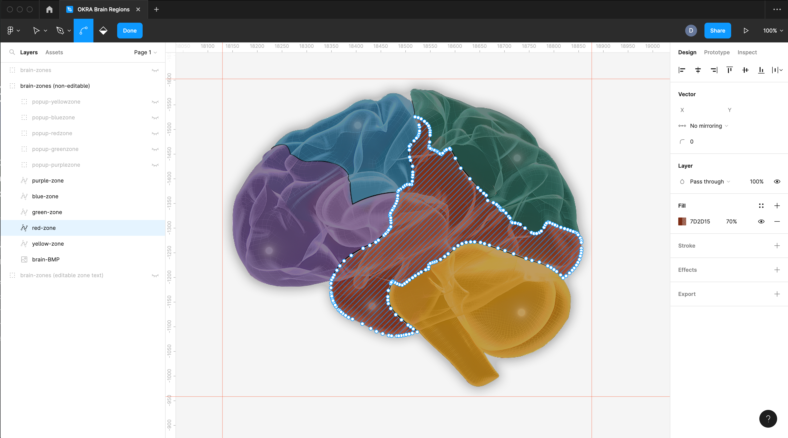
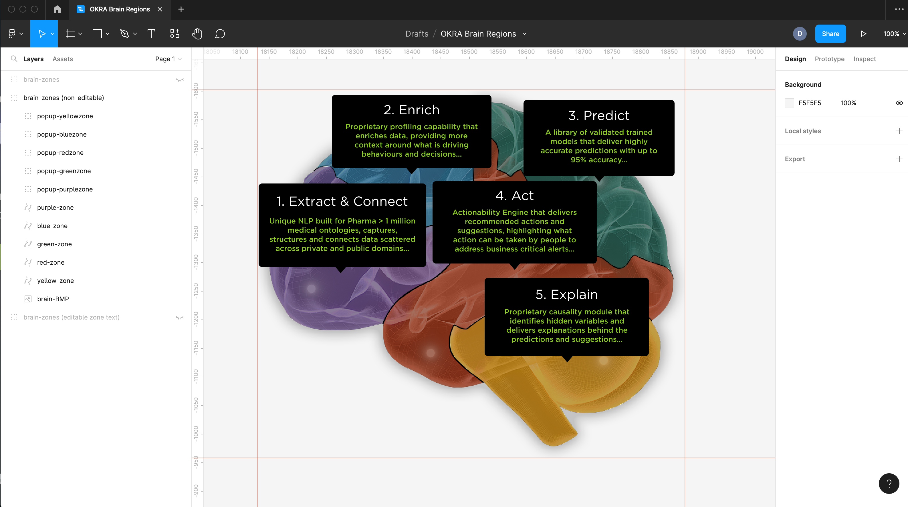
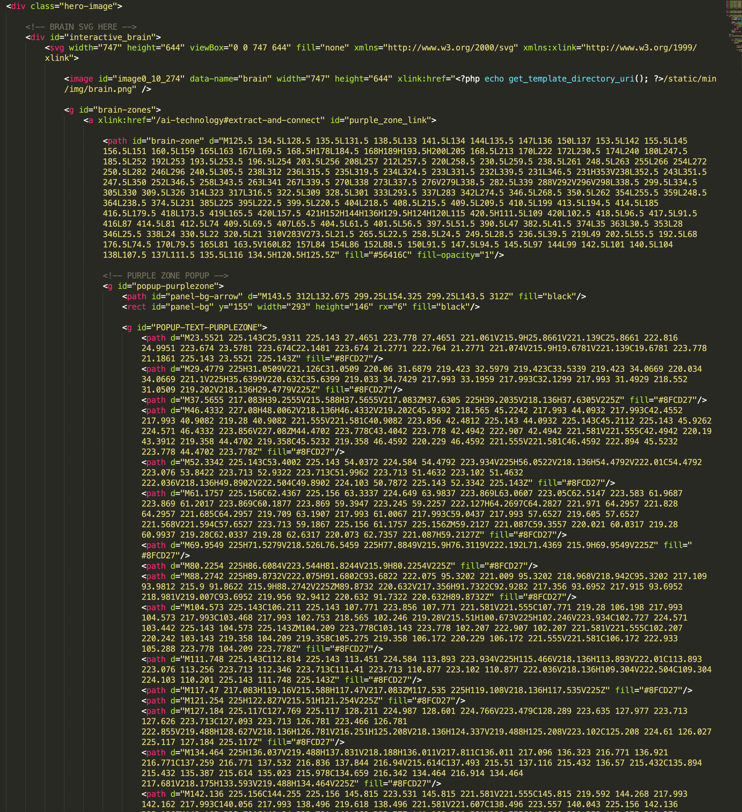

OKRA Interactive 'Brain' (December 2022)
In the original briefing for the OKRA ai project, I was set a task to create an interactive ‘brain’ - whereby users hover over certain regions of a brain image, the region will highlight and a popup tooltip will appear. Each region of the brain is colour coded, and I had the idea that it would also be fun to change the section background colour when the user hovered over the Brain image.
The video below demonstrates the end result of my code, with the explanation of how I built this effect follwing thereafter.
I decided the best way to do this was to have a BMP image of the brain, with an SVG that sits over the top - I used Figma to manually trace each brain region, and gave them names such as ‘red-zone’, ‘purple-zone’ etc.
The image below is a screenshot from figma, showing the manually traced svg paths;
The actual colour is solid in the SVG, but I would use CSS to reduce the opacity down to zero unless the region is hovered.
Next up, I also created the popups in Figma, and flattened any text elements to become a path inside the SVG file.
The important thing was making sure all layers and folders were named consistently so that I could later use CSS and Javascript to perform the interactions.
The Brain SVG was added inline, and clearly commented in the code to see each coloured region.
The CSS is fairly simple for each region of the brain.
#interactive_brain svg a path#brain-zone {
transition: 0.35s opacity ease-in-out;
opacity: 0;
}
#interactive_brain svg a:hover path#brain-zone {
opacity: 0.45 !important;
}
The path with the solid colour is set to opacity zero, and is then increased in opacity on hover.
Similarly, each ‘zone’ has a popup which uses opacity zero and translateY, so that when the element is interacted with it fades in, and slides up.
#purple_zone_link {
#popup-purplezone {
opacity: 0;
transform: translateY(1rem);
transition: 0.25s;
}
&:hover {
#popup-purplezone {
opacity: 1;
transform: translateY(0);
}
}
}
Changing the background colour of the hero section on brain region hover is where the Javascript mostly comes in. Inside the HTML, I had a number of ‘layers’:
<div class="hero-radial-gradient"></div> <!-- radial gradient colors for brain hover --> <div class="hero-radial-gradient-purple"></div> <div class="hero-radial-gradient-blue"></div> <div class="hero-radial-gradient-green"></div> <div class="hero-radial-gradient-red"></div> <div class="hero-radial-gradient-yellow"></div> <!-- radial gradient colors for brain hover -->
Each div has a radial gradient colour that corresponds to each region (red, purple, etc), but they are hidden, and only show if the corresponding brain region is hovered.
.hero-radial-gradient-purple {
background: radial-gradient(circle at 66% 50%, #522980 0%, #0b2020 85%);
position: absolute;
top: 0;
left: 0;
right: 0;
bottom: 0;
mix-blend-mode: screen;
transition: 0.5s;
opacity: 0;
visibility: hidden;
}
The actual background pattern is a solid image - with no opacity applied. The clever part , is that the radial gradient div uses the CSS Mix Blend Mode (Screen) in order to create the effect of the vortex background image ‘passing through’ the gradient’!
Here is the Javascript I wrote to handle the interactions of the background layers changing on hover of brain regions:
interactiveBrain: function() {
const interactive_brain = document.getElementById('interactive_brain');
const hero_radial_gradient = document.querySelector('.hero-radial-gradient');
const purple_zone_link = document.getElementById('purple_zone_link');
const blue_zone_link = document.getElementById('blue_zone_link');
const green_zone_link = document.getElementById('green_zone_link');
const red_zone_link = document.getElementById('red_zone_link');
const yellow_zone_link = document.getElementById('yellow_zone_link');
const radial_gradient_default = document.querySelector('.hero-radial-gradient');
const radial_gradient_purple = document.querySelector('.hero-radial-gradient-purple');
const radial_gradient_blue = document.querySelector('.hero-radial-gradient-blue');
const radial_gradient_green = document.querySelector('.hero-radial-gradient-green');
const radial_gradient_red = document.querySelector('.hero-radial-gradient-red');
const radial_gradient_yellow = document.querySelector('.hero-radial-gradient-yellow');
if (document.body.contains(interactive_brain)) {
purple_zone_link.addEventListener('mouseover', function() {
radial_gradient_default.style.opacity="0";
radial_gradient_default.style.visibility="hidden";
radial_gradient_purple.style.opacity="1";
radial_gradient_purple.style.visibility="visible";
});
purple_zone_link.addEventListener('mouseout', function() {
radial_gradient_default.style.opacity="1";
radial_gradient_default.style.visibility="visible";
radial_gradient_purple.style.opacity="0";
radial_gradient_purple.style.visibility="hidden";
});
blue_zone_link.addEventListener('mouseover', function() {
radial_gradient_default.style.opacity="0";
radial_gradient_default.style.visibility="hidden";
radial_gradient_blue.style.opacity="1";
radial_gradient_blue.style.visibility="visible";
});
blue_zone_link.addEventListener('mouseout', function() {
radial_gradient_default.style.opacity="1";
radial_gradient_default.style.visibility="visible";
radial_gradient_blue.style.opacity="0";
radial_gradient_blue.style.visibility="hidden";
});
green_zone_link.addEventListener('mouseover', function() {
radial_gradient_default.style.opacity="0";
radial_gradient_default.style.visibility="hidden";
radial_gradient_green.style.opacity="1";
radial_gradient_green.style.visibility="visible";
});
green_zone_link.addEventListener('mouseout', function() {
radial_gradient_default.style.opacity="1";
radial_gradient_default.style.visibility="visible";
radial_gradient_green.style.opacity="0";
radial_gradient_green.style.visibility="hidden";
});
red_zone_link.addEventListener('mouseover', function() {
radial_gradient_default.style.opacity="0";
radial_gradient_default.style.visibility="hidden";
radial_gradient_red.style.opacity="1";
radial_gradient_red.style.visibility="visible";
});
red_zone_link.addEventListener('mouseout', function() {
radial_gradient_default.style.opacity="1";
radial_gradient_default.style.visibility="visible";
radial_gradient_red.style.opacity="0";
radial_gradient_red.style.visibility="hidden";
});
yellow_zone_link.addEventListener('mouseover', function() {
radial_gradient_default.style.opacity="0";
radial_gradient_default.style.visibility="hidden";
radial_gradient_yellow.style.opacity="1";
radial_gradient_yellow.style.visibility="visible";
});
yellow_zone_link.addEventListener('mouseout', function() {
radial_gradient_default.style.opacity="1";
radial_gradient_default.style.visibility="visible";
radial_gradient_yellow.style.opacity="0";
radial_gradient_yellow.style.visibility="hidden";
});
}
},
The hero area has a number of gradient shadows, and in order to make these smooth, I used HSLA colour technology with a smooth increment:
.hero-bottom-gradient {
display: block;
position: absolute;
left: 0;
right: 0;
bottom: 0;
height: 27rem;
background: linear-gradient(0deg,
hsl(184, 52%, 6%) 0%,
hsla(184, 52%, 6%, 0.81) 19%,
hsla(184, 52%, 6%, 0.56) 34%,
hsla(184, 52%, 6%, 0.38) 47%,
hsla(184, 52%, 6%, 0.27) 56.5%,
hsla(184, 52%, 6%, 0.19) 65%,
hsla(184, 52%, 6%, 0.12) 73%,
hsla(184, 52%, 6%, 0.075) 80.2%,
hsla(184, 52%, 6%, 0.04) 86.1%,
hsla(184, 52%, 6%, 0.02) 91%,
hsla(184, 52%, 6%, 0.008) 95.2%,
hsla(184, 52%, 6%, 0.002) 98.2%,
hsla(184, 52%, 6%, 0) 100%
);
}
All of these steps required that the actual SVG file be very well organized, retaining the group names and ID's for easy reference when I made changes via Javascript and CSS:
Note: The client later changed their mind and decided to use different functionality on the website to the original interactive Brain code outlined in this case study, but I none the less wanted to write this case study as I felt it was a good learning exercise.